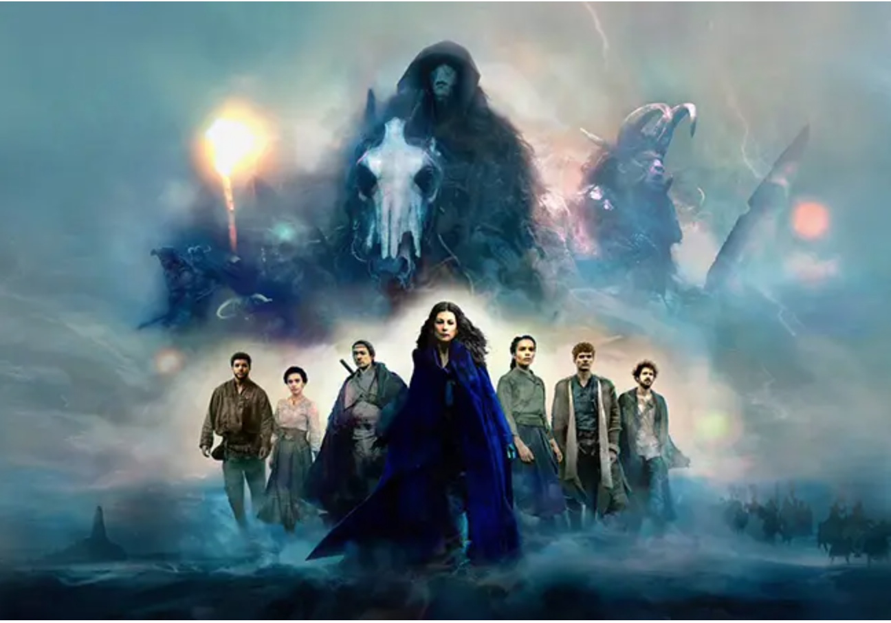
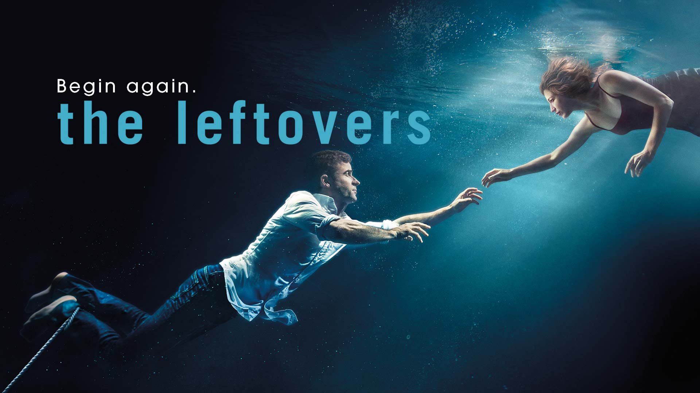
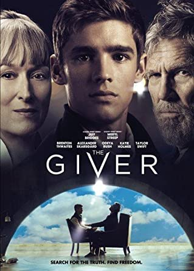
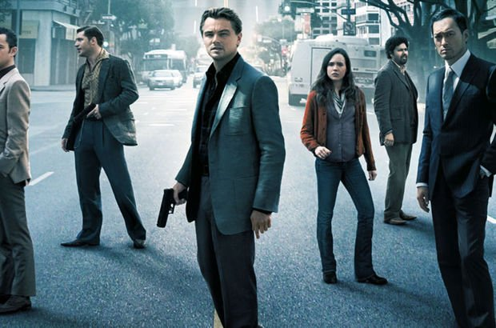

Y. ASLI İĞNE
Hakkımda
Merhaba benim ismim Yadigar Aslı İğne. Eskişehir'de yaşıyorum.
Aynı zamanda ev arkadaşlarım olan; Monti ve Poşet adında iki köpeğim,
Paşa, Göbek ve Şans adında üç kedim var.
Plates yapıyorum ve kahve içmeyi çok severim.
İlgi Alanlarım
-
Filmler
-
Inception
-
The Giver
-
Harry Potter Serisi
-
The Lord of the Rings Serisi
-
Diziler
-
Kitaplar
-
Küçük Prens - Antoine de Saint-Exupéry
-
Şeker portakalı - José Mauro de Vasconcelos
-
Sineklerin Tanrısı - William Golding
-
İnsan Ne ile Yaşar - Tolstoy
En Sevdiğim Diziler
-
The Wheel Of Time

-
The Leftovers

En Sevdiğim filmler
-
The Giver

-
Inception
